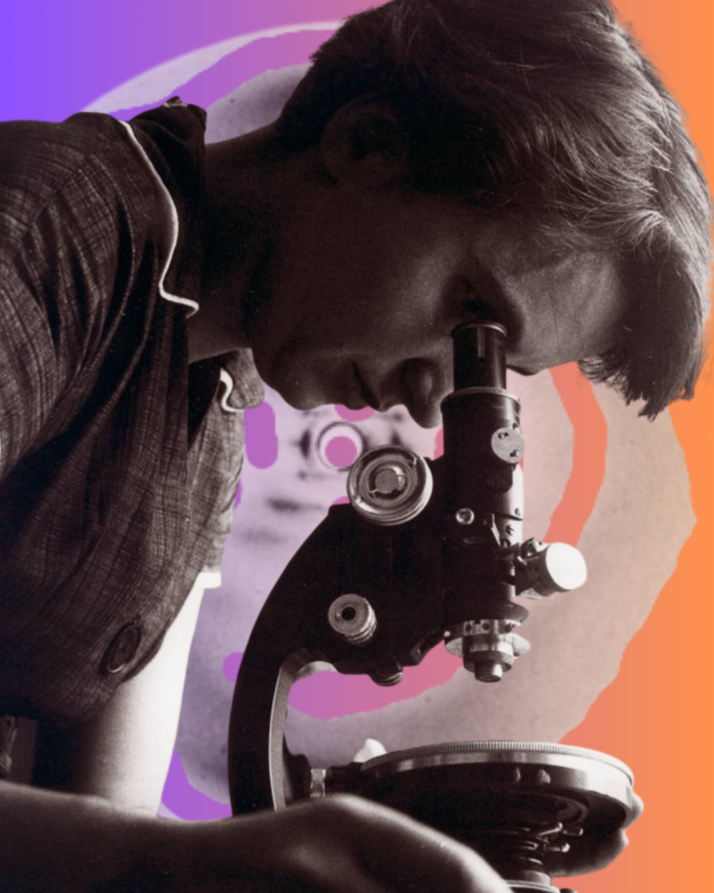
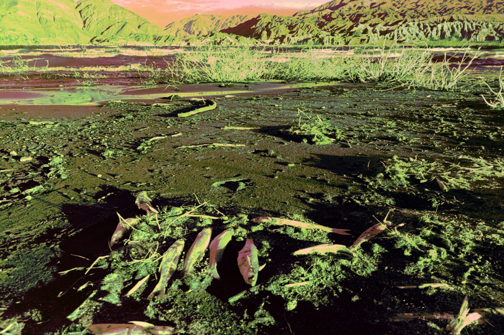
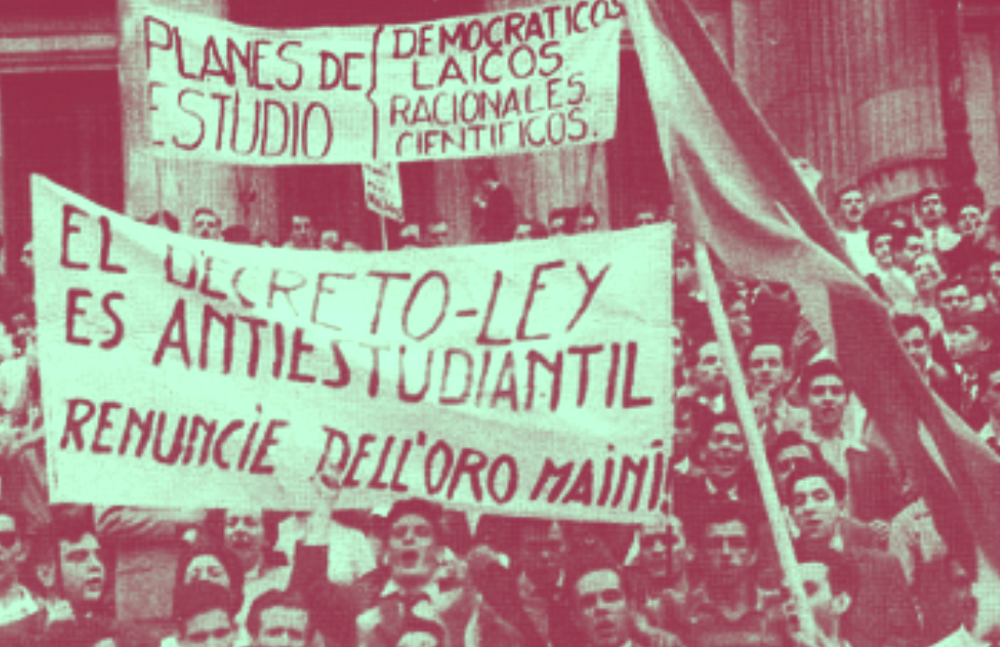
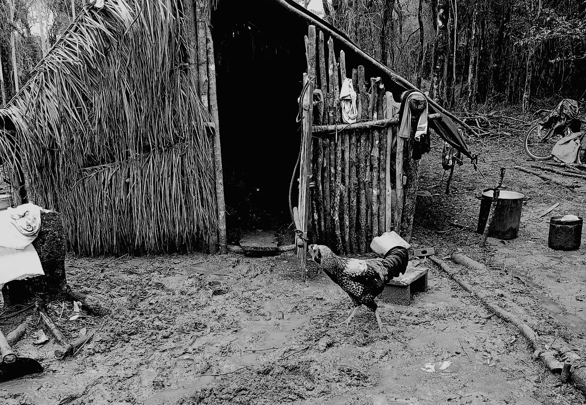
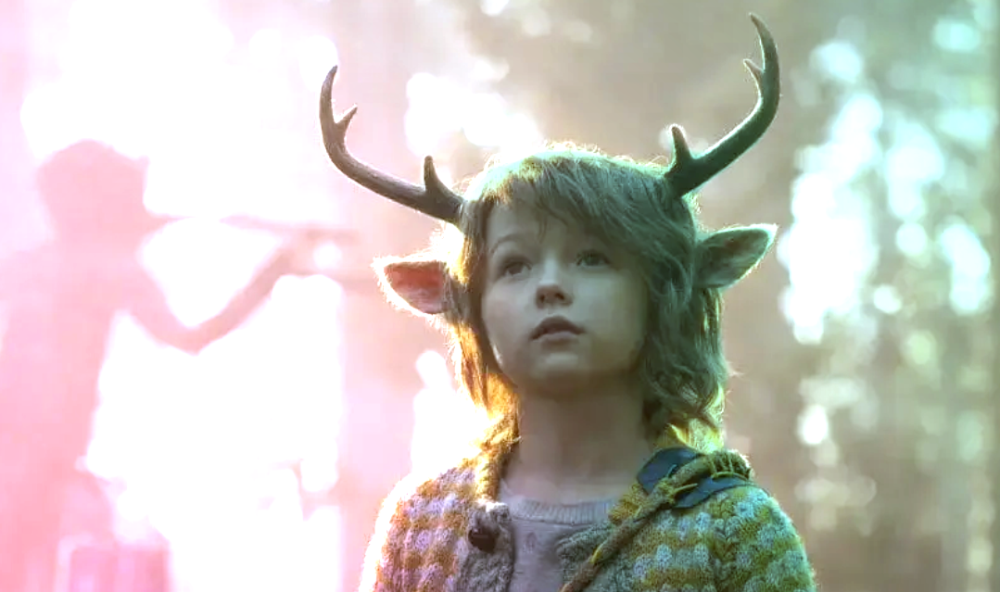

EDITORIAL

EDITORIAL
¿Democracia para quién?
El editorial de esta edición analiza la conferencia de Angela Davis en el seminario "¿Democracia en colapso?", donde la filósofa cuestiona los cimientos excluyentes de la democracia liberal. En su disertación Davis nos invita a pensar como la prisión no es una anomalía, sino la "prueba negativa" de una libertad concedida solo a unos pocos, y que el encarcelamiento masivo revela la continuidad del pasado esclavista. Frente a ello, propone el abolicionismo penal como una reconceptualización de la democracia misma. Su enfoque interseccional entrelaza racismo, capitalismo y patriarcado, y su llamado final es a construir una justicia que no sea sinónimo de castigo, sino una conquista colectiva.
ARTÍCULOS DE LA EDICIÓN julio 2026

ARTÍCULO
LA FOTOGRAFÍA 51: Retratos de la invisibilización de ayer y de hoy
En 1952, Rosalind Franklin capturó la imagen que descifraría el secreto de la vida. Pero su nombre quedó fuera de la historia. La Fotografía 51 es hoy el símbolo del avance de la ciencia y la persistencia de un sistema que sigue relegando a las mujeres al pie de página de sus propios descubrimientos.

ENTREVISTA
Zona de sacrificio
Desde la Gaceta Clara Zetkin dialogamos con Saúl Zeballos, referente de la Asamblea Jáchal No Se Toca, que nos da detalles sobre un nuevo estudio sobre la contaminación producida por la mina Veladero. Repasamos como las recientes leyes RIGI y Súper RIGI, que buscan ampliar un proyecto minero que ya ha convertido a Jáchal en una "zona de sacrificio".

Artículo
¿La muerte como horizonte? Cartografiando un porvenir posible
Las lógicas del mercado dejan a los pueblos cada vez más pobres, a los ricos cada vez más cínicos. En este terreno sombrío, la cultura nos presta sus narrativas apocalípticas que sostienen el discurso hegemónico: no hay futuro, al menos para quien no pueda pagarlo. Pero si, como dice Berardi, lo único que sucede es que ya no somos capaces de imaginarlo, la tarea clínica hoy es estrictamente imaginativa y colectiva. A las guardias de los hospitales llegan las explosiones de los padeceres, pero hay otra cara del asunto. El horizonte no está cerrado; está en disputa.

ARTÍCULO
Iglesia Católica y Educación: de la Ley 1420 a la Ley de Educación Nacional
Una de las cuestiones centrales que recorrió la conformación del sistema educativo argentino ha sido el lugar de la religión en la educación. Pese a que la Iglesia católica ha confrontado con distintos gobiernos en esta materia y a la extendida idea de que en nuestro país la educación pública es laica, un breve repaso respecto a las principales normativas que atañen a los niveles de escolaridad obligatoria muestra el sostenimiento estatal sistemático al sector privado, confesional en gran medida.

NOTA
Territorio ancestral Mbya en resistencia
Una nueva ofensiva judicial mantiene bajo amenaza a la comunidad Mbya Guaraní Puente Quemado II, ubicada en el paraje Cañafístola, en Garuhapé, Misiones. La lucha de Puente Quemado II es por la permanencia en su territorio, por el futuro de la selva, del agua, acuíferos, de la biodiversidad y la posibilidad de decidir si Misiones seguirá siendo gobernada en función de los intereses del agronegocio forestal o de la defensa de la vida, los bienes comunes y los Pueblos que han protegido este territorio desde mucho antes de la conformación del Estado.

RESEÑA
Sweet Tooth: los espejismos del pasado y otros mundos posibles
¿Se acuerdan cuando pensamos que la pandemia nos iba a hacer mejores? En 2020, creíamos que del confinamiento saldríamos de esta crisis más solidarios, más conscientes, menos individualistas. La naturaleza se regeneraba, los cielos se despejaban y por un instante pareció que el capitalismo frenaba su marcha. Pero lo que vino después fue exactamente lo contrario. Sweet Tooth nos habla de ese mismo espejismo. Esta bella historia nos propone la organización y la comunidad, aprender a vivir con nuestras heridas, a cuidarnos mutuamente desde nuestras miradas parciales y finitas.